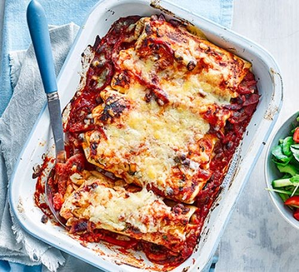

Enchiladas

Follow this recipe for very nice enchiladas.
You can make the sauce ahead of time for these chicken enchiladas, served with coriander, avocado and soured cream.
Enchiladas are a staple of Mexican cuisine, consisting of traditionally pieces of chicken baked in tortilla wraps and then topped with cheese.
The concoction is then usually served with sour cream and salsa.
Ingredients
For the enchilada sauce
- 1 large onion, finely chopped
- 1 tbsp olive oil
- 1 garlic clove, crushed
- 1 tsp smoked paprika
- 1 tsp dried oregano
- 1 tsp chilli powder
- ½ tsp ground cumin
- 500g/1lb 2oz passata
- 1 tbsp brown sugar
- 1 tbsp cider vinegar
- salt and freshly ground black pepper
For the enchilada
- 2 onions, sliced
- 1 red pepper, deseeded and sliced
- 1 yellow pepper, deseeded and sliced
- 3 tbsp olive oil
- 2 garlic cloves, finely chopped
- 1 red chilli, seeds removed, finely chopped
- 4 skinless, boneless chicken breasts, cut into thin strips
- 400g/14oz red kidney beans, drained and rinsed
- 8 flour tortillas
- 100g/3½oz cheddar, grated
To serve
- 4 spring onions, trimmed and sliced
- 2 tbsp finely chopped coriander
- 1 large avocado, peeled and sliced
- 150ml/5fl oz soured cream
Method
-
Start by making the enchilada sauce. Put the onion into a medium saucepan with the olive oil and cook over a low-medium heat for 7–8 minutes, or until soft and just starting to brown at the edges.
- Add the crushed garlic and cook for a further minute. Add the smoked paprika, dried oregano, chilli powder and ground cumin, mix well and cook for a further 30 seconds.
- Add the passata, brown sugar and vinegar to the pan, season well with salt and freshly ground black pepper and cook over a low–medium heat for 20 minutes until thickened slightly. Remove from the heat and blend until smooth.
- Preheat the oven to 190C/170C/Gas 5.
- For the enchilada, heat half of the olive oil in a large frying pan, add the sliced onions and peppers and cook over a medium heat for about 3 minutes, or until just tender and starting to caramelise at the edges. Add the garlic and red chilli and cook for a further 30 seconds. Remove from the pan and set aside.
- Heat the remaining oil in the frying pan, add the chicken and cook quickly over a medium heat until cooked through and golden brown.
- Return the onion and pepper mixture to the pan, add half of the enchilada sauce, and drained kidney beans, season well and cook for a further minute.
- Lay the flour tortillas on the work surface and divide the chicken mixture between them. Roll the flour tortillas around the filling into cigars and arrange neatly and snuggly in an ovenproof dish (roughly 20 x 30cm/8x 12in). Spoon the remaining enchilada sauce over the top and scatter with grated cheese.
- Bake for about 20 minutes, or until the filling is piping hot and the cheese bubbling, melted and golden-brown.
- To serve, scatter with the spring onions and chopped coriander and serve with sliced avocado and soured cream alongside.
Back to Main Page